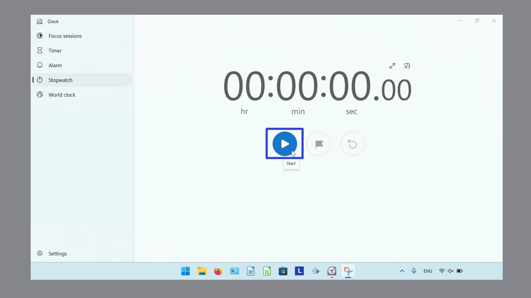
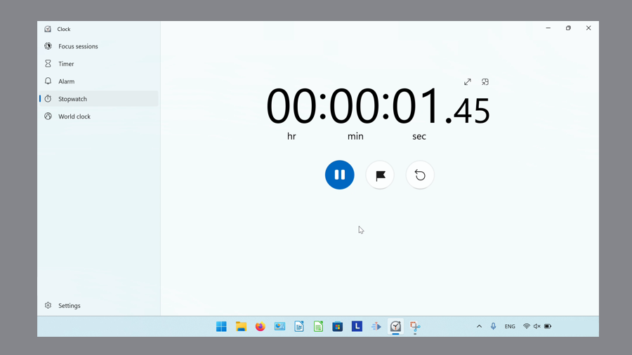
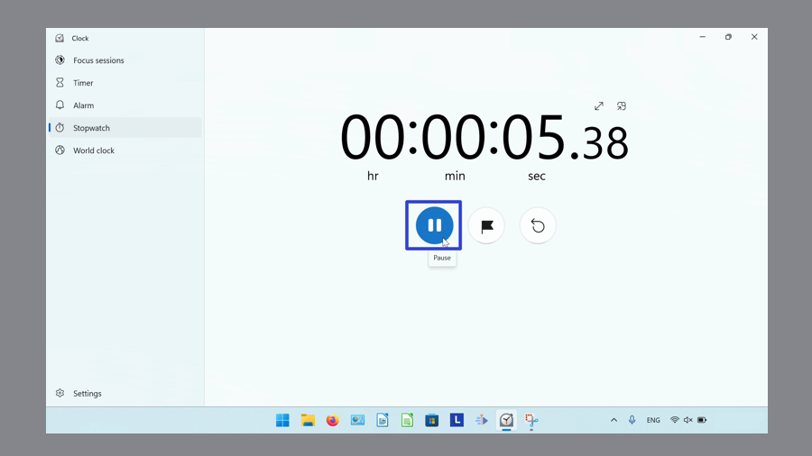
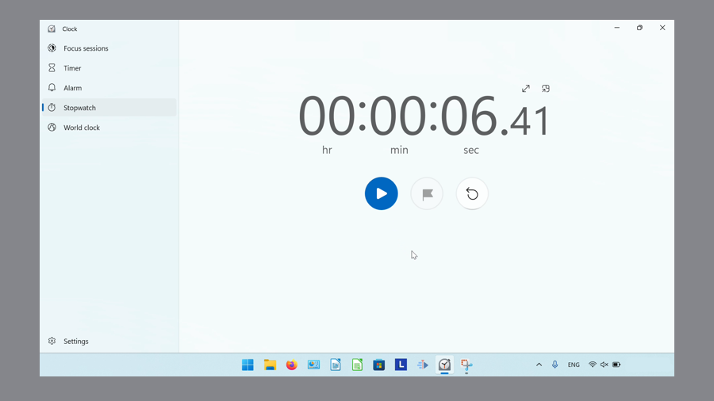
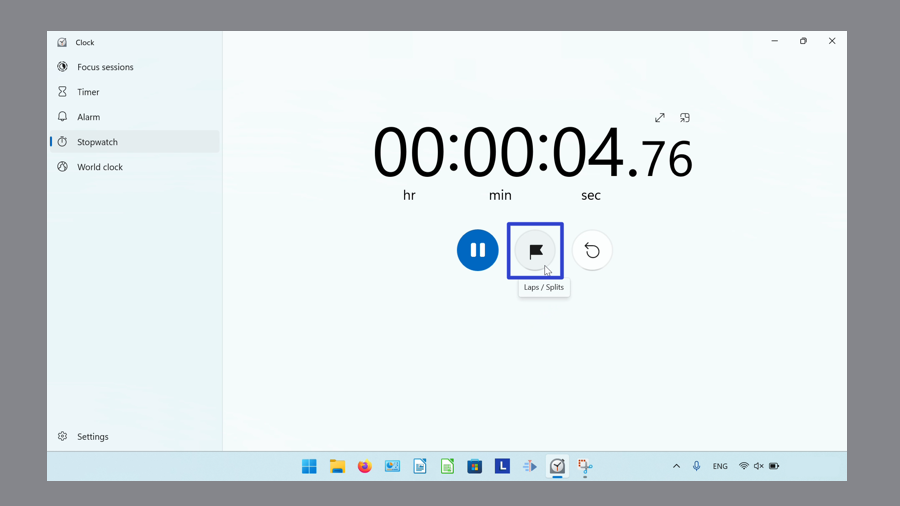
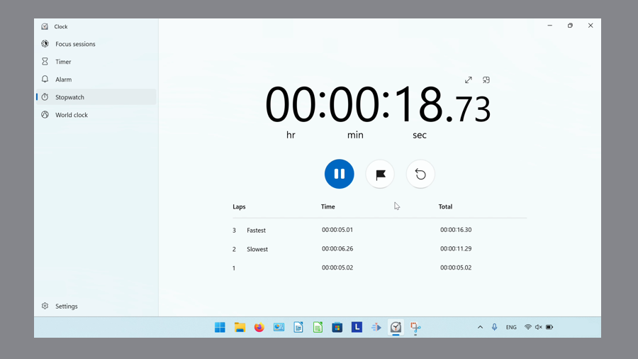
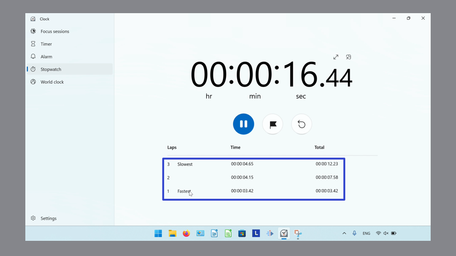
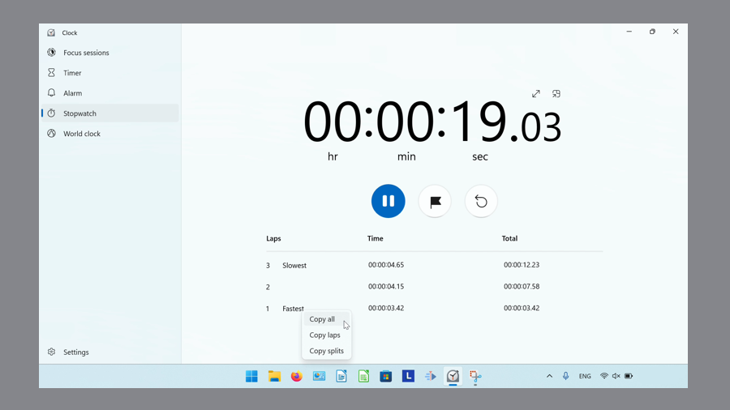
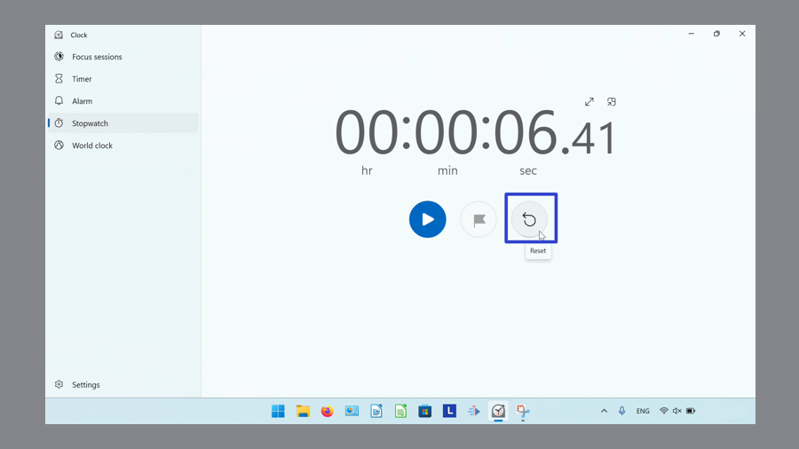
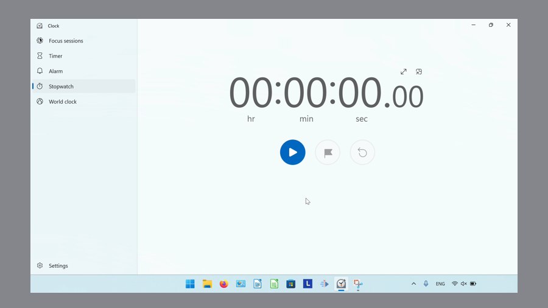

How to Use the Stopwatch in Microsoft Windows Clock (Windows 11)
This tutorial covers:
How to Start the Stopwatch
How to Pause the Stopwatch
How to Add a Lap/Split
How to Reset the Stopwatch
No time to scroll down? Click through these tutorial slides:
Watch a video tutorial:
How to Start the Stopwatch
- Step 1: First switch to Stopwatch mode. Click the “Start” button. 
- The Stopwatch starts running. 
How to Pause the Stopwatch
- Step 1: Start to the Stopwatch. Click the “Pause” button. 
- The Stopwatch pauses. 
How to Add a Lap/Split
- Step 1: First start the Stopwatch. Click an “Laps / Splits” button. 
- Step 2: Continue clicking the “Laps / Splits” button to add multiple laps or splits. 
- Step 3: Right click the data. 
- Step 4: In the menu that opens, click to select an option to copy the data. 
How to Reset the Stopwatch
- Method 1: Pause the Stopwatch. Click the “Reset” button. 
- The Stopwatch resets the time. 
Save these instructions for later with this free tutorial PDF.